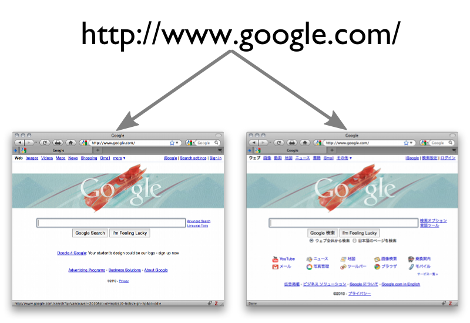
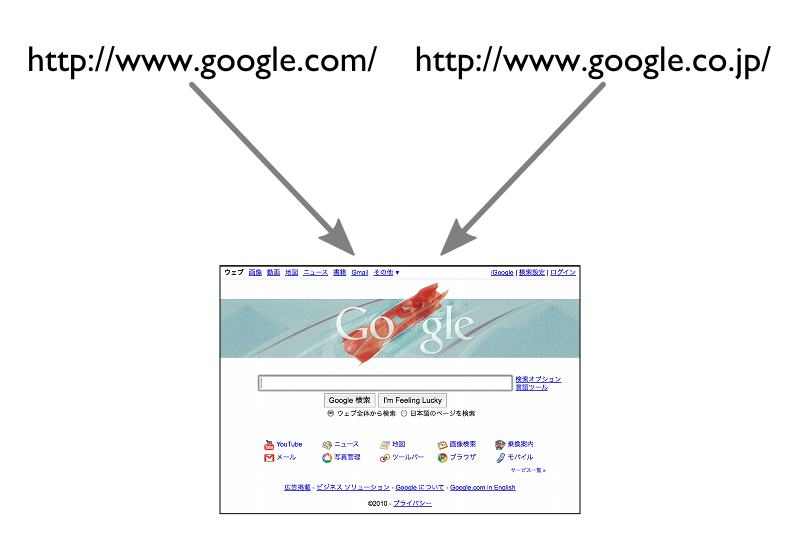

Uniform Resource Identifier (URI)
(3) Resource Identification
- Early hypertext systems identified documents within the scope of a single system
- The Web uses URIs (Uniform Resource Identifers) as global identifiers
http://www.ca.com/mailto:erik.wilde@dret.nettel:+1-510-684-2179urn:isbn:0451450523
Global naming leads to global network effects … the value of an identifier increases
the more it is used consistently.
[http://www.w3.org/TR/webarch/]
(4) URIs & Resources
- A URI identifies a resource
- But what is a resource? A resource is anything identified by a URI!
- Resources are a way of conceptually dividing up an information space
- URIs do not merely identify; they are often used for access and interaction
- Interaction mechanics are determined by the URI's scheme (
http://www.ca.com/)
- A popular method of interacting with a resource is by dereferencing the URI
(5) URI Schemes
URI = scheme ":" hier-part [ "?" query ] [ "#" fragment ]
http://dret.net/lectures/nie-2017/technology#uri-schemes
- URIs in their general case are very simple
- The scheme determines how resources are identified
- The identification may be hierarchical or non-hierarchical
- Many URI schemes are hierarchical
- It is then possible to use relative URIs such as in
<a href="..">
- The slash character is not just a character, in URIs it has semantics
- Query components specify additional information
- It is non-hierarchical information further identifying the resource
- In many cases, it can be regarded as
input
for resource interactions
(6) Resources & Representations
- When a URI is dereferenced by a client, it receives some data
- That data is called a representation of the resource identified by the URI
- Resources are abstract, representations are concrete
- Resources may have various representations, and they may vary with time
(7) 1 Resource, 2 Representations

(8) 2 Resources, 1 Representation

Hypertext Transfer Protocol (HTTP)
(10) DNS & HTTP
The two fundamental protocols which every Web client must use are DNS access and HTTP.
Most operating systems provide an API for DNS access. TCP (which is required as the
foundation for HTTP) also is usually provided by the operating system. Most modern
operating systems provide support for handling HTTP as well.

(11) HTTP Messages
- HTTP needs a reliable connection
- The foundation for HTTP is the Internet's TCP
- DNS resolution yields an IP address
- Open TCP connection to default port 80 (or explicit port specified in URI)
- HTTP is a text-based protocol
- The connection is used to transmit text messages
- All HTTP messages are human-readable (not all entities, though)
- Basic HTTP operations can be carried out by hand or simple tooling
start-line
*( header-field CRLF )
CRLF
[ message-body ]
(13) HTTP Requests
- After opening a connection, the client sends a request
- The [http://webconcepts.info/concepts/http-method/] indicates the action to be performed on the resource
- HTTP's most widely used methods are: [http://webconcepts.info/concepts/http-method/GET], [http://webconcepts.info/concepts/http-method/HEAD], [http://webconcepts.info/concepts/http-method/POST]
- Other interesting methods are: [http://webconcepts.info/concepts/http-method/PUT], [http://webconcepts.info/concepts/http-method/DELETE]
- The URI identifies the resource to which the request should be applied
- Absolute URIs are required when contacting proxies
- Absolute paths are required when contacting a server directly
- The URI may contain query information
- The [http://webconcepts.info/concepts/http-header/Host] header field must be included in every request
method SP request-target SP HTTP-version CRLF
*( header-field CRLF )
CRLF
[ message-body ]
(14) HTTP [http://webconcepts.info/concepts/http-method/GET]
- Retrieval action based on the URI
- Maybe implemented by reading a file
- Maybe implemented by processing a file
- Maybe implemented by querying a database
- Maybe implemented by invoking a process
- Semantics may change based on header fields
If-*: only reply with the entity if necessary
- [http://webconcepts.info/concepts/http-header/Range] only reply with the requested part of the entity
- Cacheability depends on header fields of the response
GET / HTTP/1.1
Host: www.ca.com
HTTP/1.1 200 OK
Access-Control-Allow-Origin: *
Content-Type: text/html; charset=UTF-8
ETag: "1635c-54b703861183b-gzip"
Last-Modified: Fri, 24 Mar 2017 01:50:37 GMT
Server: Apache/2.4.6 (Red Hat Enterprise Linux) Communique/4.1.12
Cache-Control: no-cache
Date: Fri, 24 Mar 2017 10:06:04 GMT
Transfer-Encoding: chunked
Connection: keep-alive
(15) HTTP Responses
- The server's response to interpreting a request
- The [http://webconcepts.info/concepts/http-status-code] is given numerically and as text
2** for variations of ok
3** for redirections
4** are various client side problems ( [http://webconcepts.info/concepts/http-status-code/404]: not found)
5** are various server side problems
- Header fields specify additional information
- Information about the server
- Information about the entity (media type, encoding, language)
HTTP-version SP status-code SP reason-phrase CRLF
*( header-field CRLF )
CRLF
[ message-body ]
(17) HTTP Connection Handling